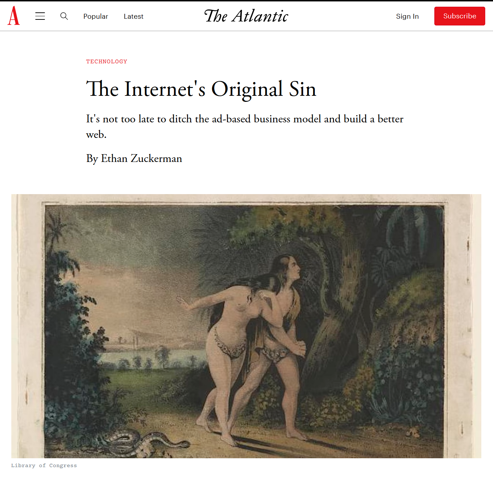
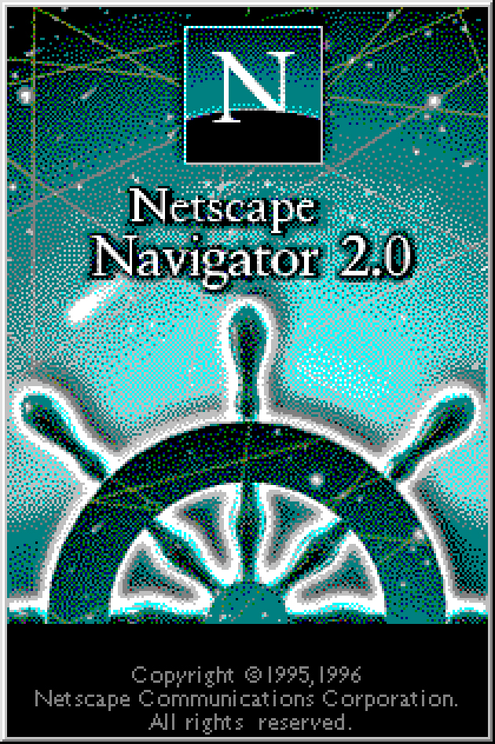
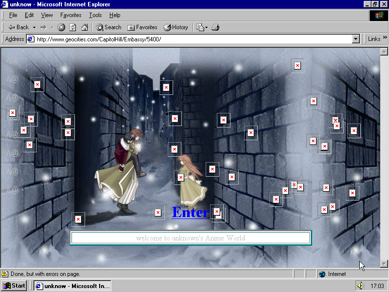
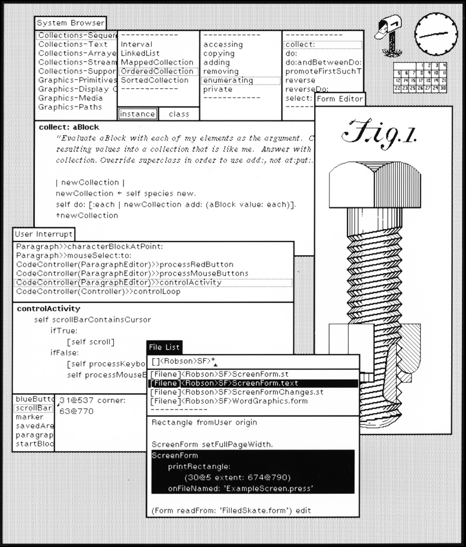
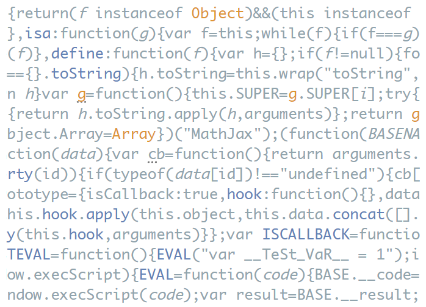
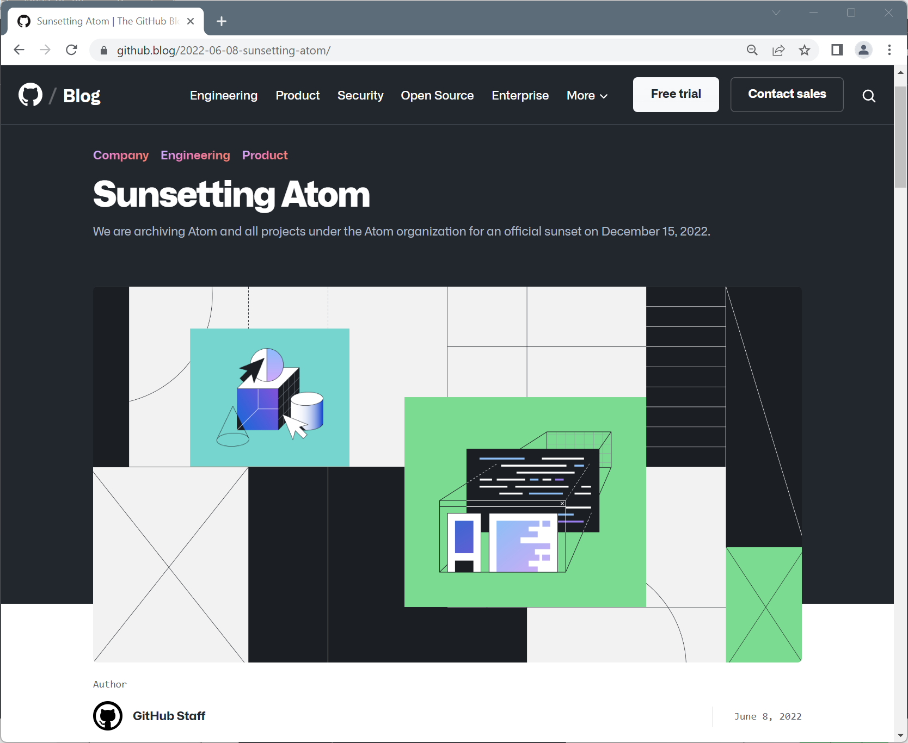
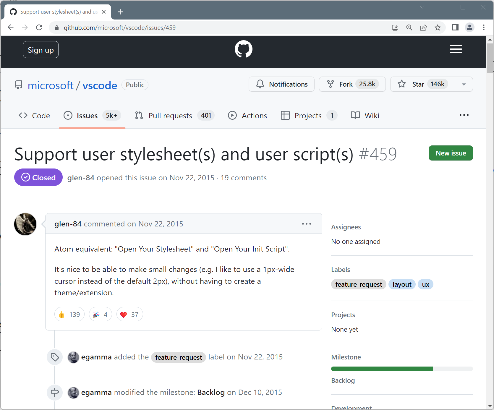
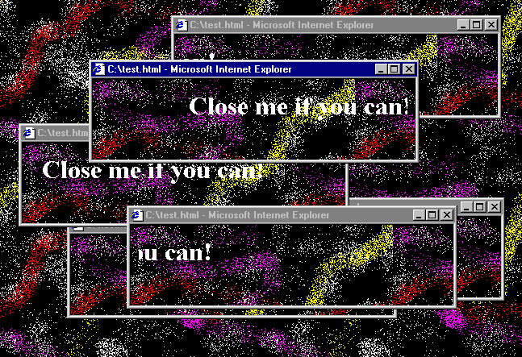

Pop-up from Hell
On the growing opacity of software systems
Tomas Petricek, Charles University
tomas@tomasp.net
https://tomasp.net
@tomaspetricek
Christopher Alexander keynote (1996)
The technical way in which you currently look at programming is almost as if you were willing to be "guns for hire."
What I am proposing [is] a view of programming as the natural genetic infrastructure of a living world (...) could
then have the result that a living structure in our towns, houses, work places, cities, becomes an attainable thing.

Apology
Along the way, we ended up creating one of the most hated tools in the advertiser’s toolkit: the
pop-up ad.
I wrote the code to launch the window and run an
ad in it. I’m sorry. Our intentions were good.
Pop-ups and the web
A longer version of the story
Technical aspects
JavaScript language
- The Open, Cross-Platform Object Scripting Language For Enterprise Networks and the Internet
Browser scripting
- Netscape Navigator 2.0 (1995)
window.openandwindow.onunload- Both available in JavaScript 1.0

Social aspects
Geocities
Creative online com-munity of the 1990s
Subject of interest to internet historians (Screen by Olia Lialina)
Easy to copy and adapt fun JavaScript hacks!
DEMO
Pop-up from Hell
No more fun :-(
Popup blocking commonplace in the early 2000s
Blocks popups on page load, unload and timer events, but not on click
Well, actually...
Is this the evolution
of the pop-up ad idea?
Same user experience, recreated using harder to block technique
Reflections
Growing opacity of the web
1990s
Simple scripts
View source
Copy & paste
Popups work!
2000s
Complex apps
Transpiled code
Canvas + WASM
Opaque elements
DEMO
Google Docs vs. Office for the web

Canvas rendering
Replace built-in editable element with custom code
Announced in May 2021
Better performance!
Accessibility issues?
May affect extensions?
Embedding
Use of system inside programs
- Program running in an operating system
- Web page embedded in a browser
- Smalltalk program embedded in a VM
- Smalltalk VM embedded in a host OS
Deep vs shallow
Shallow embedding
- Reuse system features
- Limited user control
- Legible to the system
- Allows accessibility, blocking
Deep embedding
- Redo everything from scratch
- Lose commonality, accessibility
- Gain control and flexibility
Why deep embedding happens?
-
Popups from hell
Avoiding being understood by browser -
Compilation to JavaScript
Use "better" programming languages -
Replacing built-in features
Programmers think they can do better
Is deep embedding inevitable?
Good engineering reasons
- Better developer tools
- Performance, user experience
Restricts the user freedom!
- Limits transparency
- Limits unanticipated use
Reasons that may prevent it
- "Small projects" cannot afford this!
- Culture or policy may be against it
Atom vs Code
Editor mini-wars of the 2010s

Atom (*2014 - †2022)
Hackable editor for
the 21st century
VS Code (*2015)
Build and debug modern web & cloud applications.
Comparing Atom and Code
Technical similarities
- Open source with a key backer
- Electron with JavaScript++
- Extensible via plugins
Technical differences
- Code runs plugins in a separate process
- Plugins limited to using an API
- Done for good engineering reasons!
DEMO
Hacking the Atom editor

Is this useful?
FsLab plugin for F# data science
Not possible in Code, until more extensibility points added.

Force for change!
Openness allows unanticipated extensibility
Popular new ideas may inspire later API change
Good engineering reasons strike again
Information hiding
Allow later adaptations
and system evolution
But how reliably
can we anticipate?
Information sharing or hiding (1/3)
The reason for the project workbook is distribution of information.
The problem is not to restrict information, but to ensure that relevant information gets to all the people who need it.
Fred Brooks (1975)
Information sharing or hiding (2/3)
We propose that one begins with a list of difficult design decision or design decisions which are likely to change.
Each module is then designed to hide such a decision from the others.
Dave Parnas (1972)
Information sharing or hiding (3/3)
I dismissed Parnas's concept as a "recipe for disaster" (...). Parnas was right, and I was wrong.
I am now convinced that information hiding is the only way of raising the level of software design.
Fred Brooks (1995)
Sharing and hiding
Has information hiding won?
- Open source software!
- UNIX process metadata
- Data science notebooks
- MIDI devices since 1980s
MIDI SysEx messages

Many old MIDI instruments continue to be musically viable [due to] its least “designed” aspect: system exclusive (SysEx) messages.
The content of SysEx messages was never standardized (...). In practice, [they] were used in a semi-conventionalized way as a means for externalizing the complete state of a musical device.
Conclusions
Not willing to be guns for hire?
Growing opacity of software systems
Web and deep embedding
- Opacity via growing complexity
- Strive to make software legible
- Legibility to system & users
Editors and information hiding
- Opacity via explicit restriction
- Information hiding is overrated?
- Allow unintended extension!
Conclusions
On the growing opacity of software systems
- Where good engineering reasons lead us!
- How to achieve 90s web qualities today?
- How to build systems without information hiding?
Tomas Petricek, Charles University
tomas@tomasp.net
https://tomasp.net
@tomaspetricek
Google Manifest v3
API for web browser extensions in Chrome
"V3 extensions enjoy enhancements in security, privacy, and performance"
Adds limitations on request blocking and number of rules
Google Privacy Sandbox
Advertising API replacing cookies
"In practice, we expect that Privacy Sandbox will harm Web privacy, and further cement Google’s control over the Web."
References
- The Origins of Pattern Theory, the Future of the Theory, And the Generation of a Living World
- Seasonal Restoration
- The Internet's Original Sin
- "You Are Not Expected to Understand This": How 26 Lines of Code Changed the World
- JavaScript: the first 20 years
- Google Docs will now use canvas based rendering: this may impact some Chrome extensions
- Google Docs is switching to canvas-based rendering. Here's what that means
- Sunsetting Atom
- Tracing a Paradigm for Externalization: Avatars and the GPII Nexus